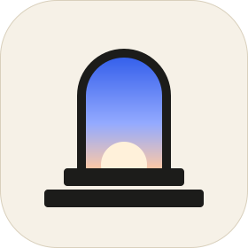

Resume cards
When a site comes back from the shelf, a short "where you left off" card reminds you what you were reading.

Plinth DownloadA native browser for macOS
Plinth has no toolbar and no tab strip. Pages run to the top of the window, and a single floating bar lists them by name, grouped by website. Sites you stop using fade onto a shelf, so the bar stays short without you tidying it.
No tabs to squint at. Each open page is a word you can read, on one bar floating over the page.
Pages from the same website share a capsule led by its icon, so a trip, a doc or a thread stays together.
A site you use every day stays. A one-off fades within a day and drops onto a searchable shelf. Pinned and kept sites never fade.
Drag a page onto its neighbour and the two join on the bar, side by side in the window.
⇧-click any link to preview it in a card. Press ↩ to keep it as a page, or carry on where you were.
⌘J asks Apple's on-device model about this page, the whole site, or both halves of a split. Nothing leaves your Mac.
And the rest of it
When a site comes back from the shelf, a short "where you left off" card reminds you what you were reading.
Search finds pages by what they were about, listed under "By meaning".
Sites you keep open together can become a group. One click shows only that group.
A pin is a small resident app with one page. Links that leave its site open as ordinary pages, and sign-in keeps working.
Links from other apps open in a small window with no bar. ⇧⌘↩ moves the page into your main window.
A built-in ad and tracker blocker. Plus downloads, find in page, zoom and reopen closed page.
The bar takes its cue from the page under it, going light over light pages and dark over dark ones, so it never shouts.
⌘L · ⌘T
Type an address or a search. The command bar also finds open pages, pins, shelved pages and history, with results found by meaning under their own heading.
Privacy
Keyboard first
Free, open source and built natively for macOS with Swift and WebKit.
Download for Mac